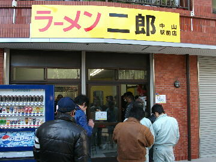
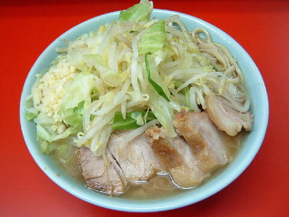
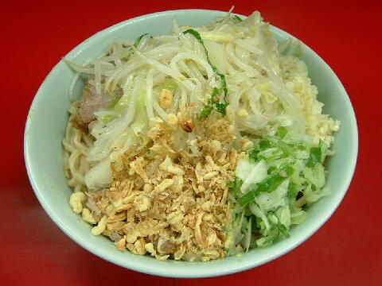
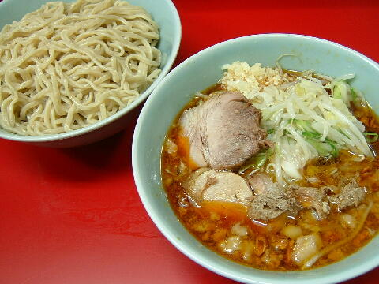
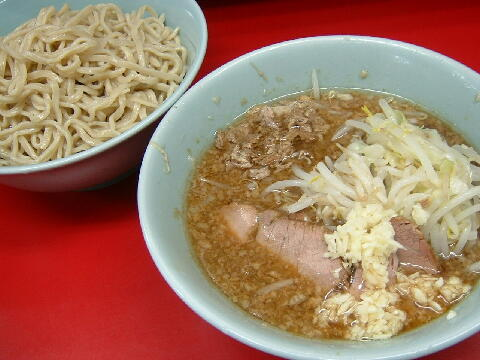

横浜市 緑区 台村町 309-1 土井ビル
木
11：00〜14：00 18：00〜21：30

小ラーメンぶた2枚 740円、小ラーメンぶた5枚 840円、小ラーメンW豚入（売切）
大ラーメンぶた2枚 840円、大ラーメンぶた5枚 940円
生卵 50円、ピリ辛にらだれ 50円
ねぎ汁なし ＋100円、つけ麺 ＋100円、ぎょったまつけ麺 ＋100円
店員は、市川猿之助似の店主と父店主と助手。
黒コショウ（ギャバン）、一味唐辛子。
レンゲ無。ティッシュ有。名刺無。
BGMは、J-POP。
トッピングは、二郎標準。
ラーメン二郎 中山駅前店 中山駅前店のTwitter
「ラーメン二郎 中山」でヤフー検索
「ラーメン二郎 中山」でヤフーリアルタイム検索
「ラーメン二郎 中山」でグーグル検索

小ラーメン豚入 ニンニク
麺は、二郎の中では細目で柔らかめ麺。量は支店標準。
ぶたは、程好く醤油がしみているぶた。小ぶりだが美味い。
スープは、表面油に豚の出汁がタップリ出ていて、更に醤油がキリッときいたタイプ。
ヤサイは、モヤシ7：キャベツ3の割合。店主の実家がとんかつ屋だけあって、キャベツが甘くて柔らかく良かった。
ニンニクは、粗く刻まれた、いい具合にからいニンニク。
常連になるとちょっとしたサービスがある。

小ラーメン＋ねぎ汁なし ニンニク
トッピングはラーメンと同じ。
二郎の旨味が詰まったタレに、ねぎ、フライドオニオンが加わる。ブラックペッパーも少々。
「辛いので！」というとピリ辛にしてくれる。
提供は夏季限定。つけ麺、ぎょったまと週代わりで提供される。

小ラーメン＋つけ麺 ニンニク
トッピングはラーメンと同じ。
つけダレは、ラー油の辛さが少し効いている。酸味も少しあり清涼感がある。フライドオニオンも少しあったと思う。
麺は、柔らかめな歯応えの麺（固め軟め不可）。ラーメンより多目に思えた。付け合せがある時もある。
提供は夏季限定。ねぎ汁なし、ぎょったまと週代わりで提供される。

小ラーメン＋ぎょったまつけ麺 ニンニク
トッピングはラーメンと同じ。
つけダレは、魚粉と玉ねぎのぎょったま。山椒とほぐし豚が少々。さっぱりとした印象。
麺は、プリプリした水でしめられた麺（固め軟め不可）。ラーメンより多目に思えた。
提供は夏季限定。ねぎ汁なし、つけ麺と週代わりで提供される。
ＰＣ店